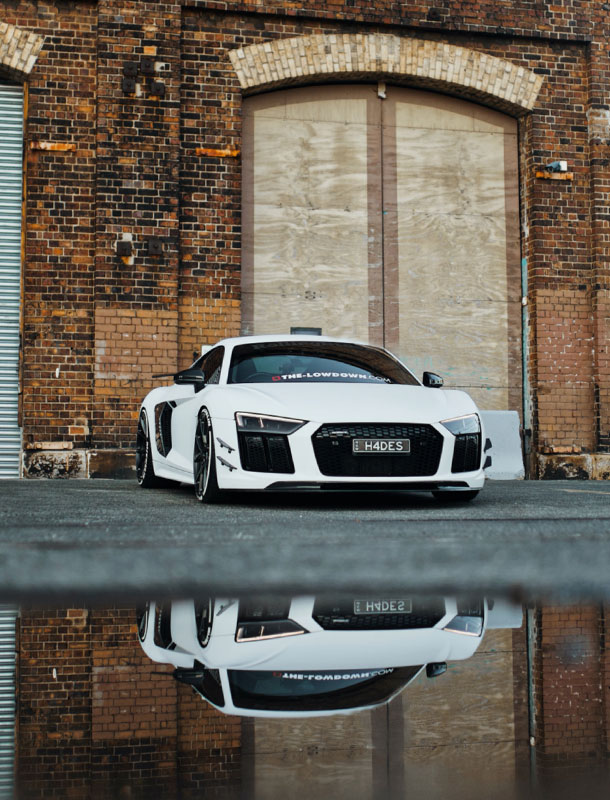

“THERE ISN'T A SINGLE THING I WOULD CHANGE“
Der R8 pulsiert im Rhythmus der Unebenheiten. Und der Herzschlag folgt ihm.
Wir sind unterwegs auf einer fordernden Landstraße, die sich so weit entfernt
von der nächsten Stadt und der nächsten Autobahnabfahrt in die Botanik drückt, dass sich in der
angrenzenden Flur Fuchs und Hase schon tagsüber Gute Nacht wünschen – falls man einander bis zur
Bettruhe nicht mehr über den Weg laufen sollte.
Hier ist die Landschaft so rau wie der Asphalt – Letzterer besteht mehrheitlich aus einer dünnen
Bitumenschicht samt festgefahrenem Split, der die Aufbrüche und Absacker der vergangenen Jahre nur
notdürftig kaschiert. Und dessen scharfkantige Partikel reifenraspelnd aus der Versenkung spitzen.
Der Audi hält die Spur. Er lässt sich nur so weit aushebeln, dass die innere Tempowarnung kurz
aufleuchtet und der Erlebnishunger gestillt ist. Das war nun schnell genug, sagt der Herzschlag zum Ego,
ohne dass die Handflächen nach der Jeans zum Trockenreiben verlangen.
